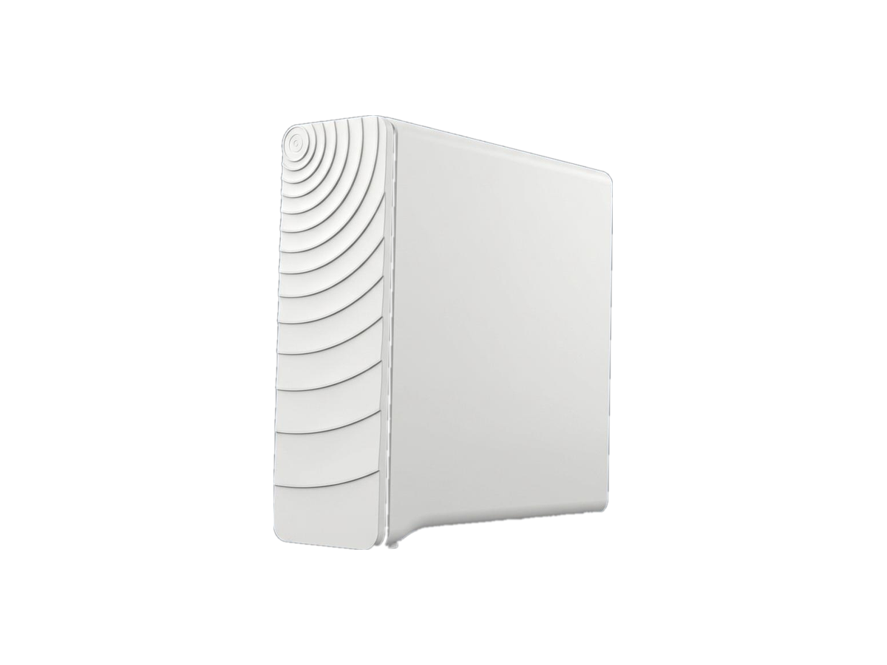

Под мойку
Под мойкуRP-U07
RO-очиститель под мойку 400–600 GPD
SKU: RP-U07
MOQ: уточняйте при запросе
Главная/Продукция/Системы RO под мойку/ RP-U03

Системы RO под мойку
Высокопроизводительный бытовой RO-очиститель (X901)
RP-U03 — Бытовой RO-очиститель высокой производительности. Ключевая характеристика: производительность RO 1000 / 1200 / 1600 GPD. Также доступна высокопроизводительная разновидность с теми же уровнями производительности 1000 / 1200 / 1600 GPD — см. варианты ниже. Характеристики подтверждаются для каждой модели и заказа.
Напряжение / частота настраиваются под страну назначения. Другие конфигурации подтверждаются для каждого заказа.
RP-U03 — это бытовой RO-очиститель высокой производительности (X901) в трёх уровнях производительности: 1000 / 1200 / 1600 GPD. Основная модель использует два картриджа с пятиступенчатой фильтрацией, имеет номинальный объём очищенной воды 8000 л и комплектуется краном с цифровым дисплеем / подогревом размером 473 × 166 × 422 мм. Две другие разновидности имеют те же уровни 1000 / 1200 / 1600 GPD или рассчитаны на центральную установку 1200G — см. варианты ниже.
Каков минимальный объём заказа?
Первый заказ — 200 единиц на модель, повторные заказы — 500 единиц.
Можно ли заказать образец до оптового заказа?
Да. Образцы готовы через 15 дней, стоимость образца возвращается при первом оптовом заказе. Оптовые заказы занимают 40 дней после утверждения образца и отгружаются FOB Шэньчжэнь.
Какой вариант выбрать?
Указывать RP-U03 и уточнять разновидность: основная модель (X901), высокопроизводительная разновидность (AM618R) или центральная разновидность 1200G (CENTRAL-RO). Основная модель — 8000 л, высокопроизводительная разновидность — 4000 л; центральная разновидность — 1200 GPD, остальные характеристики подтверждаются по заказу.
Три разновидности — указывать RP-U03 и уточнять разновидность (основная модель, высокопроизводительная разновидность или центральная разновидность 1200G).
Наведите курсор на разновидность, чтобы увидеть её характеристики. На сенсорных экранах коснитесь разновидности.

Полные спецификации каждого варианта, рядом. Таблица спецификаций ниже показывает значения основной модели.
| Спецификация | RP-U03-1 — основная модель (X901) | RP-U03-2 — высокопроизводительная разновидность (AM618R) | RP-U03-3 — центральная разновидность 1200G (CENTRAL-RO) |
|---|---|---|---|
| Производительность RO | 1000 / 1200 / 1600 GPD | 1000 / 1200 / 1600 GPD | 1200 GPD |
| Номинальный объём очищенной воды | 8000 L | 4000 L | Подтверждается по заказу |
| Размеры (Д×Ш×В) | 473 × 166 × 422 mm | Подтверждается по заказу | Подтверждается по заказу |
| Фильтрация | Два картриджа; пять ступеней | Предфильтр PP+C + RO + пост-уголь | Подтверждается по заказу |
| Для крана | Цифровой дисплей / с нагревом | Подтверждается по заказу | Подтверждается по заказу |
| Напряжение / частота | Настраивается под страну назначения | Настраивается под страну назначения | Настраивается под страну назначения |
7 строк спецификаций из каталога ROPureOEM.
| Производительность RO | 1000 / 1200 / 1600 GPD |
|---|---|
| Фильтрация | Два картриджа; пять ступеней |
| Номинальный объём очищенной воды | 8000 L |
| Размеры L×W×H | 473 × 166 × 422 mm |
| Для крана | Цифровой дисплей / с нагревом |
| Напряжение / частота | Настраивается под страну назначения |
| Другие конфигурации | Подтверждается по заказу |
Спецификации взяты из каталога ROPureOEM. Если значение ещё не подтверждено, оно указано как «Подтверждается при заказе» — мы не публикуем неподтверждённые цифры.
Под мойкуRO-очиститель под мойку 400–600 GPD
SKU: RP-U07
MOQ: уточняйте при запросе
 Под мойку
Под мойкуRO под мойку с накопительным нагревом
SKU: RP-U08
MOQ: уточняйте при запросе
 Под мойку
Под мойкуВысокопроизводительный RO-очиститель с фронтальным доступом
SKU: RP-U09
MOQ: уточняйте при запросе
 Под мойку
Под мойкуRO-очиститель с тремя картриджами
SKU: RP-U11
MOQ: уточняйте при запросе